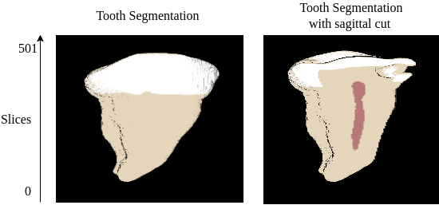

|
Luiz Guilherme Kasputis Zanini I am a master's degree student at the School of Computer Engineering at the University of São Paulo (USP), under the guidance of Fátima de Lourdes dos Santos Nunes. My research interests include tasks related to medical image segmentation, self-supervised learning, and classification in 3D datasets. |
{kind=link}
ResearchI have a strong interest in computer vision, machine learning, optimization, and image processing. My research primarily revolves around the application of various computational models to enhance the diagnosis of medical images, which is the main focus of my studies. |
|  |
Identification and quantification of caries from CBCT segmented images
Luiz Zanini, Fátima Nunes, and Izabel Rubira-Bullen In Proceedings of the 23rd Brazilian Symposium on Computing Applied to Health, June 27, 2023, São Paulo/SP, Brasil. SBC, Porto Alegre, Brasil, 1-12 This study explores CBCT, which acquires three-dimensional radiographic images. We developed a set of image processing techniques to segment three dental structures and accurately identify interproximal caries. |
|
Convolutional architectures with LSTM and TCN to embolism classification: exploring dependency between data
Luiz Zanini, Aldomar Silva, Felipe Almeida, Fátima Nunes, and Anna Costa. In Proceedings of the 19th National Meeting on Artificial and Computational Intelligence, November 28, 2022, Campinas/SP, Brasil. SBC, Porto Alegre, Brasil, 461-472 The research focused on image classification in computed tomography for pulmonary embolism classification, leveraging convolutional architectures with LSTM and TCN modules. |
Honors | |
|
Best Final Paper of the Computer Engineering Poli - USP 2022 Luiz Zanini The final project involved using image processing for segmentation and machine learning to classify the intensity of caries, as well as incorporating virtual reality for result visualization. |
|

|
Second place for best paper in the undergraduate category at the National Meeting of Artificial and Computational Intelligence (ENIAC)
Luiz Zanini, Aldomar Silva, Felipe Almeida, Fátima Nunes, and Anna Costa. The evaluation of the projects was carried out through the presentation of the work and the quality of the article's writing. |
Experience |
 |
AdaTech | Set 2021 - Jan 2022 Data Science Intern Data modeling in DynamoDB and MySQL, data insertion via AWS services (Lambda, SQS, and S3) Data visualization using Amazon QuickSight Developing a machine learning models |
|
Stefanini Scala | Jan 2021 - May 2021 Data Science Intern Developed models using genetic algorithms Involvement in MILP problems using tools like CPLEX, Pulp, and Coin CBC Querying and formatting an SQL database with Sparky |
|
|
Taqtile | May 2020 - Dec 2020 Software Develop Intern Mobile front-end developer Worked with React Native and Apollo GraphQL |
|
|